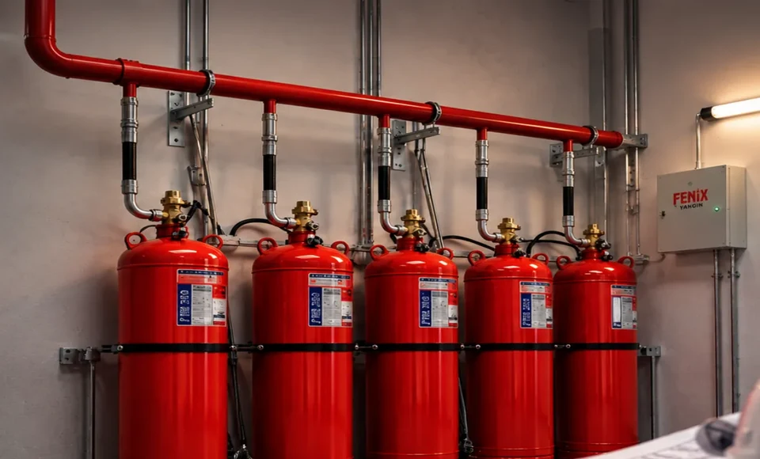

FM200 Gazlı Yangın Söndürme Sistemi (HFC-227ea)
Kritik veri, enerji ve bilgi işlem merkezleri için 10 saniyede yangını boğan, kalıntı bırakmayan, elektriksel iletkenliği olmayan ve insanlı mahallerde güvenle uygulanabilen temiz gaz teknolojisi.

10 SANİYE İÇİNDE SÖNDÜRME · NFPA 2001 & ISO 14520 ONAYLI
Sisteme Genel Bakış ve Koruma Prensibi
FM200 yangın söndürme sistemi (kimyasal adıyla Heptafluoropropane - HFC-227ea), oda sıcaklığında gaz halinde bulunan, elektrik iletkenliği olmayan, renksiz ve kokusuz bir temiz yangın söndürme ajanıdır. Yangın üçgenindeki serbest radikallerle kimyasal olarak etkileşime girip alevdeki ısı enerjisini hızla soğurarak yanma reaksiyonunu 10 saniye gibi son derece kısa bir sürede sonlandırır. Sektörde FM 200 yangın söndürme sistemi olarak da anılan bu teknoloji, kritik hacimlerde can ve ekipman güvenliğini en üst düzeye çıkarır.
Geleneksel su veya köpük bazlı söndürme sistemlerinin aksine FM200 gazlı söndürme sistemi, boşalma sonrasında ortamda hiçbir artık, toz, yağ veya korozif tortu bırakmaz. Bu sayede veri merkezleri, server ve switch odaları, arşiv belgeleri ve hassas elektronik altyapılar hiçbir fiziksel hasar görmeden çalışmasını sürdürür. Ajan seçimi aşamasında teknik karşılaştırma için Novec 1230 ve FM200 farkı ile gazlı söndürme ajan miktarı hesabı rehberlerimizi inceleyebilirsiniz.
Fenix Yangın olarak tüm FM200 projelerimizde VdS ve UL lisanslı hidrolik hesaplama yazılımları kullanıyoruz. Mahal hacmi, asma tavan ve yükseltilmiş döşeme payları, sıcaklık ve rakım faktörleri hassasiyetle hesaplanarak en uygun silindir ve nozul kombinasyonu projelendirilir.
Nasıl Çalışır? — 4 Aşamalı Müdahale Döngüsü
Çapraz bölge (cross-zone) optik duman ve sıcaklık dedektörleri veya VESDA lazer hava çekmeli sistemler yangın emarelerini anında yakalar.
Kontrol paneli sesli ve ışıklı sirenleri devreye sokar; personelin güvenli tahliyesi için standart 30 saniyelik geri sayım süreci başlar.
Solenoid vana tetiklenerek 25 veya 42 bar basınç altındaki FM200 gazı özel hesaplanmış nozullardan tüm hacme homojen şekilde boşalır.
Kimyasal zincirleme yanma bağı kırılır, mahal sıcaklığı aniden düşürülerek yangın tamamen söndürülür ve yeniden tutuşma engellenir.
Teknik Özellikler ve Tasarım Parametreleri
Öne Çıkan Avantajlar
- 10 saniye gibi rekor bir sürede alevi söndürerek operasyonel kesintiyi minimuma indirir.
- Elektriksel iletkenliği sıfırdır; enerji altındaki trafo, pano ve sunucularda kısa devreye yol açmaz.
- Boşalma sonrası arkasında hiçbir sıvı, toz veya kimyasal tortu bırakmaz; temizlik maliyeti yoktur.
- Asgari silindir depolama hacmi gerektirir; mahal içinde çok az zemin alanı kaplar.
- Doğru tasarım konsantrasyonlarında insan sağlığına zararsızdır; personel bulunan mahallerde uygulanabilir.
- NFPA 2001, EN 15004 ve ISO 14520 uluslararası standartlarına tam uyumludur.
Kritik Uygulama Alanları
Uluslararası Standartlar & Mühendislik Desteğimiz
Fenix Yangın bünyesinde tasarlanan her sistem, uluslararası can ve mal güvenliği normlarına %100 uyumlulukla projelendirilir.
- NFPA 2001 (Standard on Clean Agent Fire Extinguishing Systems)
- ISO 14520-9 (Gaseous fire-extinguishing systems – HFC-227ea)
- EN 15004-5 (Fixed firefighting systems - Gas extinguishing systems)
- T.C. Binaların Yangından Korunması Hakkında Yönetmelik Hükümleri
- UL (Underwriters Laboratories) & FM Global (Factory Mutual) Sistem Onayları
- VdS Schadenverhütung Onaylı Hidrolik Hesap Yazılımları
FM200 Gazlı Söndürme Proje Kapsamı ve Uygulama Adımları
Fenix Yangın bünyesinde yürütülen FM200 projeleri, ilk keşiften periyodik bakıma kadar 6 aşamalı anahtar teslim mühendislik döngüsüyle teslim edilir:
- Mahal Analizi ve Ön Keşif: Odanın net hacmi, yükseltilmiş taban, asma tavan payları ve sızdırmazlık durumu yerinde incelenir.
- Akredite Hidrolik Hesap: NFPA 2001 ve ISO 14520-9 standartlarına göre VdS lisanslı yazılımla boru çapları, nozul delik çapları ve 10 saniyelik boşalma simülasyonu doğrulanır.
- Mekanik ve Elektriksel Montaj: SCH 40 dikişsiz çelik borulama, boru askı destekleri ve çapraz zon duman algılama hatları standartlara tam uygun kurulur.
- Sertifikalı Gaz Dolumu: Orijinal HFC-227ea temiz söndürücü ajan ve 25 bar / 42 bar kuru azot basınçlandırmasıyla silindir dolumu yapılır.
- Oda Sızdırmazlık Testi (Door Fan): Gazın en az 10 dakika mahalde tutunabileceği kapı fanı testi ile sahada belgelenir.
- TSE-HYB Periyodik Bakım: Yıllık periyotlarla manometre kontrolleri, kaçak testleri ve sistem işlerlik raporu düzenlenir.
FM200 Sistem Maliyetini Belirleyen 8 Mühendislik Parametresi
FM200 gazlı yangın söndürme sistemleri anahtar teslim mühendislik projeleridir. Sabit bir standart paket fiyatı bulunmamakta; toplam sistem yatırım maliyeti mahale özgü 8 temel parametre doğrultusunda hesaplanmaktadır:
| Parametre | Mühendislik Etkisi | Maliyet Bileşeni |
|---|---|---|
| 1. Mahal Net Hacmi (m³) | Odanın en, boy ve tavan yüksekliği; varsa asma tavan ve yükseltilmiş taban hacimleri dahil edilir. | Doğrudan gereken söndürücü gaz kütlesini (kg) belirler. |
| 2. Tasarım Konsantrasyonu (%) | NFPA 2001 standardına göre Sınıf A (yüzey) için minimum %7.0, Sınıf B (sıvı) veya C (elektrik) yangın risklerine göre %8.7 oranında tasarlanır. | Konsantrasyon arttıkça gerekli gaz miktarı artar. |
| 3. Gaz Miktarı ve Silindir Tipi | Hesaplanan gaz kütlesi için uygun kapasitedeki (40L, 80L, 140L, 180L) dikişsiz çelik silindirler seçilir. | HFC-227ea gaz bedeli ve onaylı silindir donanımı maliyeti. |
| 4. Boru Tesisatı ve Nozul Sayısı | VdS / UL onaylı hidrolik hesap yazılımı ile boru çapları (SCH 40/80 dikişsiz çelik) ve nozul püskürtme yarıçapları optimize edilir. | Mekanik borulama, askı-destek elemanları ve pirinç nozullar. |
| 5. Oda Sızdırmazlığı & Damper | Gazın 10 dakika mahalde kalması (Door Fan Testi) ve aşırı basınç tahliyesi için basınç damperi gereksinimi değerlendirilir. | Sızdırmazlık testi ve otomatik tahliye damperi montajı. |
| 6. Algılama ve Otomasyon | Çapraz zon (cross-zone) optik duman, sıcaklık sensörleri veya hava çekmeli VESDA sistemleri ile söndürme kontrol paneli entegrasyonu. | Algılama santrali, dedektörler, sirenler ve söndürme butonu. |
| 7. Montaj, Test ve Kabul | Saha mekanik-elektriksel montajı, hat testleri, fonksiyonel testler ve akredite devreye alma protokolü. | Mühendislik işçiliği ve devreye alma hizmet bedeli. |
| 8. Bakım ve Dolum Yaşam Döngüsü | RG 32693 uyarınca yılda en az 1 kez periyodik sızıntı kontrolü ve olası aktivasyon sonrası yeniden dolum güvencesi. | Periyodik bakım sözleşmesi ve dolum hizmeti. |
FM200 Basınç Sınıfları (25 Bar vs. 42 Bar) ve Silindir Kapasite Matrisi
FM200 sistemlerinde silindir odasının korunan mahale olan uzaklığı ve seçici vana (manifold yönlendirme) ihtiyacı, sistemin basınç sınıfını ve boru maliyetini doğrudan belirler:
| Tasarım Kriteri | 25 Bar Sistem (Standart) | 42 Bar Sistem (Yüksek Basınç) |
|---|---|---|
| Uygulama Mesafesi | Silindirin odanın içinde veya bitişik duvarda olduğu kısa mesafeler (≤ 15–20 m). | Merkezi tüp odasından uzak mahallere veya çok katlı hatlara basılan uzun mesafeler (≤ 45–60 m). |
| Maksimum Dolum Yoğunluğu | 1.15 kg / Litre (Silindir hacmi başına daha yüksek gaz kapasitesi). | 1.00 kg / Litre (Yüksek azot yastıklama basıncı nedeniyle). |
| Seçici (Yönlendirme) Vana | Tekil mahal koruması için idealdir; çoklu bölgede basınç düşümü sınırlıdır. | Tek bir merkezi bataryadan birden fazla odayı koruyan seçici vanalı sistemlere uygundur. |
| Standart Silindir Boyutları | 14 L, 28 L, 40 L, 70 L, 100 L, 140 L, 180 L (TPED / π onaylı dikişsiz çelik). | 40 L, 70 L, 100 L, 140 L, 180 L, 240 L (Yüksek basınç manifold kolektörlü). |
| BYKHY & Sigorta Uyumu | BYKHY Madde 95–98, NFPA 2001 ve yerel itfaiye ruhsat denetimlerine tam uyumlu. | FM Global / UL kurumsal sigorta denetimleri ve endüstriyel kampüs projelerine tam uyumlu. |
Mahalinizin mimari projesini veya oda ölçülerini ileterek ücretsiz ön keşif ve hidrolik simülasyon özeti alabilirsiniz.
Gerçek Saha Uygulamalarımız (FM200 Vaka Analizleri)
Gölcük Donanma Komutanlığı (MİLGEM Proje Kısmı) — ~1.000 kg FM200 Gazlı Söndürme Sistemi

Savunma sanayiimizin stratejik merkezlerinden Gölcük Donanma Komutanlığı MİLGEM (Milli Gemi) Proje Kısmı bünyesindeki yüksek güvenlikli teknik hacimler için toplamda yaklaşık 1.000 kg FM200 (HFC-227ea) temiz söndürücü gaz kapasiteli merkezi silindir bataryaları kurulmuştur.
İki bağımsız kolektör hattı üzerinde dizayn edilen çoklu silindir bankları; gaz miktarı ve hidrolik dengeleme hesapları, SCH 40/80 manifold borulaması, çekvalf grupları ve sismik konsollarla mekanik ve elektriksel montajı tamamlanarak teslim edilmiştir.
Saha Mühendislik ve Uygulama Akışı (İnfografik Süreç Özeti)
Aksa Jeneratör Çerkezköy Fabrikası — FM200 Gazlı Söndürme Tasarım, Projelendirme ve Montajı

Tekirdağ Çerkezköy Organize Sanayi Bölgesi'ndeki Aksa Jeneratör üretim fabrikasının kritik enerji, elektrik ve kontrol odaları için FM200 (HFC-227ea) gazlı yangın söndürme sistemi mühendislik tasarımı, projelendirmesi ve saha montajı gerçekleştirilmiştir.
Endüstriyel fabrika yangın güvenliği normlarına uygun olarak 5'li merkezi FM200 silindir bataryası, yüksek basınç deşarj kollektörü, düşük basınç izleme şalterleri ve çelik EMT borulu Fenix izleme/kontrol panosu devreye alınmıştır.
Saha Mühendislik ve Uygulama Akışı (İnfografik Süreç Özeti)
Tüm tamamlanan 8 gerçek saha projemizi ve infografik vaka analizlerimizi inceleyin →
Alternatif & Tamamlayıcı Sistemler

Sıkça Sorulan Sorular
+ FM200 gazı insan sağlığı için tehlikeli midir?
Hayır. NFPA 2001 standardına göre FM200 sistemleri için tasarım konsantrasyonu genellikle %7.0 ile %8.7 arasındadır. İnsan sağlığı için toksisite eşiği olan NOAEL (Hiçbir Olumsuz Etki Gözlenmeyen Seviye) değeri ise %9.0'dır. Dolayısıyla doğru mühendislik hesaplaması yapılmış mahallerde boşalma anında odada bulunan personel zehirlenmez veya boğulmaz.
+ FM200 gazı boşaldıktan sonra elektronik cihazlar zarar görür mü?
Kesinlikle zarar görmez. FM200 yalıtkan (non-conductive) bir gazdır. Devre kartlarına, manyetik medyaya veya optik sensörlere iletkenlik ya da nem etkisi yapmaz. Boşalma sonrası sadece odanın havalandırılması yeterlidir; hiçbir temizlik gerektirmez.
+ FM200 sistemlerinde oda sızdırmazlık testi (Door Fan Test) zorunlu mudur?
Evet. NFPA 2001 ve EN 15004 standartları gereğince boşalan söndürücü gazın odada en az 10 dakika boyunca söndürme konsantrasyonunun üzerinde kalması şarttır. Odanın sızdırmazlığı kapı fanı testi (Door Fan Test) ile kanıtlanmalıdır.
+ FM200 silindirlerinin periyodik dolum ve bakım süresi nedir?
Silindir manometre basınçları ve kaçak kontrolleri 6 aylık periyotlarla Fenix Yangın uzman ekiplerince denetlenir. 10 yılda bir silindirlerin hidrostatik testten geçirilmesi ve gaz tartımlarının yapılması yasal zorunluluktur.